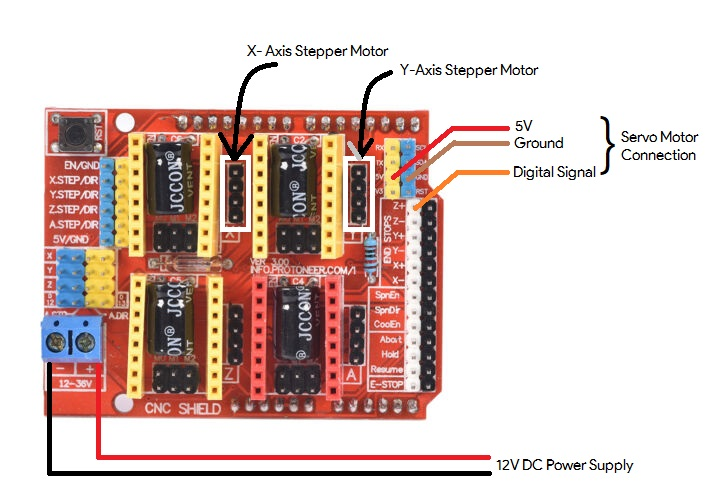
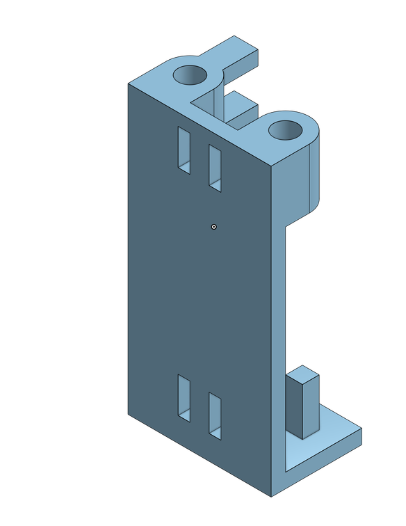

Picasso is a personal plotter I built over the first half of my 2019 winter break that operates on the principle of Computer Numerical Control (CNC). It functions on three axes, with two NEMA 17 stepper motors controlling the X and Y axes to navigate the writing apparatus across the designated writing surface and an SG90 Micro Servo Motor allocated to control the Z axis serving to dictate the up and down motions of the writing apparatus. The digital inputs were distributed using an Arduino Uno paired with a CNC Shield. I used two A4988 drivers to manage the stepper motors for the X and Y axes.
Official Project Start Date: December 19, 2019
Official Project End Date: January 01, 2020
Components Used
Concepts and Technologies Used
| Item | Purpose |
| Computer Numerical Code (CNC) | Primary principle |
| Bresenham's Line Drawing Algorithm | To draw a line on the XY Plane from point (x1, y1) to (x2,y2) while calibrating the axes |
| Xiaolin Wu's Line Algorithm | Same as above |
| Onshape | To model 3D parts |
| Inkscape | To produce vector images to be drawn |
| G-code | To manipulate the motors |
| GRBL | To execute gcode files |
Assembly
I decided to use an MDF board as the writing base because of its high density and smooth surface. I bolted the X-axis linear rail on to the board and fixed a stepper motor to control motion in that axis right next to it; I drilled 8 holes surrounding the footprint of the stepper motor so as it tie it in tight with 8″ zip ties. I placed the motor above a Styrofoam cutout to reduce noise. The Y-axis rail was mounted right on top of the X-axis slider using some welding glue. A 50mm wheel was attached to the other end of the Y-Axis rail to keep it balanced and a wooden plank (0.5″x2″x17″) was glued on to the MDF board right below the path of the wheel to keep the Y-axis rail perfectly level. I welded the Y-Axis Stepper Motor on one end of the rail. I 3D printed parts to act as mount for the timing pulley to go on opposite ends of each motor. I used Onshape as my CAD tool to design these parts.
The CNC Shield was mounted on top of the Arduino Uno, connections on the shield were made as follows with the A4988 stepper drivers inserted on the X and Y axis ports:
Pic. (3): CNC Shield Connection Outline
The pen holder was mounted on the Y axis slider [See Pic. (5)].
The Servo Motor was attached to the pen holder using welding glue.
Calibrations
In order to export G-code to this system, I used Grbl Controller v3.6. I calibrated the steps of the motor to match real life measurements by running the following commands:
$100=15 //Motion on X-Axis set to 15 steps/mm
$101=15 //Motion on Y-Axis set to 15 steps/mm
$110=3000 //Max speed of X-Axis set to 3000 mm/sec
$111=3000 //Max speed f Y-Axis set to 3000 mm/sec
$120=1500 //Set acceleration for X-Axis to 1500mm/sq. sec
$121=1500 //Set acceleration for Y-Axis to 1500mm/sq. sec
Software Elements
I used Inkscape v0.92.4 as my vector imaging tool. After finding the image I want, I trace the bitmap on the canvas, and then use the custom Inkscape Centerline Trace extension to trace out a path to avoid outlining which would form multiple layers. I then convert the thus obtained object to a path and export the G-code for this image using the MIGRBL extension. MIGRBL differs from regular GRBL in that MIGRBL is customized for CNC shields that have the X and Y axes connected to stepper motors with the Z axis connected to a servo (CNC Shields are almost exclusively built for stepper motors only). For single line fonts, I would recommend using the Hershey Text v3 extension which should be included with the Inkscape package from v1.0 and above.
Challenges
Challenge #1: Designing Parts#1.1: Designing Strong Enough Parts
Having no previous experience with either CAD or 3D printing, I was unaware of the limitations of 3D
printing. After designing all the required parts, I learned that the 0.188″ cylindrical mounts for
the pulleys would not be able to handle the stress generated by the tension of the timing belt. To
counter this, I added in a fillet around the base of the cylinder to provide some extra support as
recommended to me by Reddit user u/dirkin1, which brings me to Challenge #1.2.
#1.2: Finding a 3D Printing Service Provider
As I started this project during my winter break, the 3D printing service station provided by my
university was out of operation. Third-party 3D printing services were charging astronomical sums
for such small parts which did not fit the budget I allocated for this project. Thankfully, I was
able to find a guy close to my city via the the subreddit r/3Dprintmything who did it
for me at
1/4th of the price third-party services were charging.
#1.3: Designing the Pen Holder
Pic. (4): Isometric Projection of the Pen Holder’s Final Design
As stated before, having no previous experience with CAD, coming up with a design for the pen holder was a big challenge. I wanted to design something that was universal so that it could hold a writing apparatus possessing any girth. I came up with two different versions of the pen holder with the first one failing as it was too wobbly. When I had a final design, I was unable to have it move along the Z-Axis as originally intended. I came up with a workaround to counter this problem. I drilled a hole on the side of my pen, tied one end of a silver bead wire to the servo motor and the other end to the end of the pen’s refill tube through the hole. When the servo motor simulated a pen-down motion, rotating 90° to the left, it generated tension on the string which in turn pulled the refill tube down. The pen-up movement was simulated when the servo motor returned back to its initial position releasing all tension on the string.
Pic. (5): Servo Motor Placement
Challenge #2: Adjusting the Tension on the Timing BeltTo explain this hurdle, let us observe the setup of the Y-Axis. I noticed the writing apparatus was missing a certain number of steps each time only when it was gliding through the negative Y direction. I came to realize that this was caused because the pulley on the motor was positioned slightly lower than the pulley on the 3D printed mount. This was a quick fix.
Challenge #3: New TerritoryBeing a pure Computer Science major, electronics is a field that feels very familiar yet in reality is tremendously different. I had never worked with Arduinos or PCBs before but comprehensive reading on all of the components helped me overcome this challenge.
Things I Learned
Things I learned working on this project with no prior engagement include:
Possible Further Developments
As I work through my Computer Science Degree, I’d like to keep on building on Picasso and add machine learning capabilities to generate an acceptable bitmap image from any picture which can then be converted into a sketch-able vector file.
What I Could've Done Better
Using a flat linear rail instead of the cylindrical one I purchased with my uninformed opinion would have immensely reduced the wobbliness I had to deal with while calibrating the Z-axis motion. I may upgrade to it in the future.
Some Miscellaneous Images
Here, I will be adding some images I took while building Picasso.
This project was an absolute pleasure and I would be lying if I didn’t say I enjoyed every second of it. I would like to build a knock pattern sensing door lock for my next project. Until next time…
I posted live updates on my private stories on my Instagram account @sahajamatya for a couple dozen good people which are now accessible through Highlights if you would like to check them out.